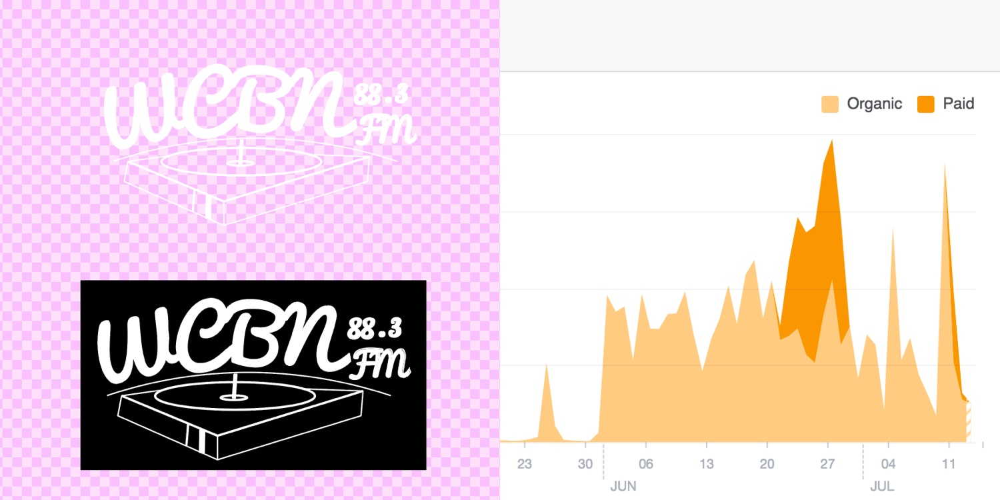

WCBN
Marketing Intern
Fall 2016 - Winter 2017
COMPANY
WCBN is the University of Michigan student-run, community freeform radio station in Ann Arbor, Michigan.
ROLE
As a marketing intern, I created and executed a campus-based marketing campaign resulting in almost 80% increased engagement and growth among the undergraduate student body. I also worked on brand devlopment, designing geofilters for events, shirts and posters.
